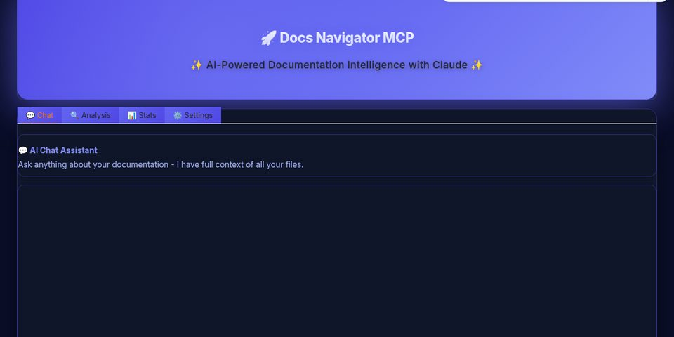

DocsNavigator MCP
Ask questions across your docs from any MCP client.
An MCP server with a Gradio app that answers questions over your documentation files. It combines full-text search, Claude, and OCR for scanned PDFs and images.
My original project, built because I needed to navigate docs. It became the basis for the SUSE Edition I built for SUSE Hack Week 25.